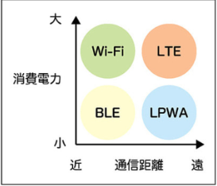

ITパス暗記ノート
14章
LANとWAN
違いは、電気通信事業者が設置した通信回線を使うか否かである（WANは使う。LANは使わない）
ルーター
LANやWANを相互接続する機器
デフォルトゲートウェイ
他のネットワークへの出入口の役割を担っている機器（ルーター）
ESSID
無線LANのネットワークを識別する文字列
ESSIDステルス
不正接続のリスクを低減できる
伝送効率
伝送効率 ＝ 伝送速度 ÷ 回線速度
伝送時間
伝送時間 ＝ データ量 ÷ 伝送速度
通信プロトコル
メーカーが異なる機器同士でも、お互いに通信できるようにするための約束事である
SMTP
（Simple Mail Transfer Protocol）
電子メールを送信するためのプロトコル
POP
（Post Office Protocol)
電子メールを受信するためのプロトコル
IMAP
（Internet Message Access Protocol）
メールサーバ上で電子メールを閲覧するためのプロトコル
IPアドレス
コンピュータを識別するための番号
ポート番号
アプリケーションソフトウェアに割り当てられる情報の出入口を示す値
MACアドレス
ネットワーク機器ごとに割り当てられる固有の宛先
ドメイン名
コンピュータやネットワークなどを識別するための名前
ドメイン名はネットワーク上のコンピュータを特定するが、URLはそのコンピュータに保存されているフォルダやファイルまで特定する
DNS
（Domain Name System）
ドメイン名とIPアドレスを対応させる仕組みである
IPv4
32ビットで構成される
IPv6
128ビットで構成される。IPv6を使うと、IPアドレスの枯渇（不足）を回避できる。
IPv6のアドレス総数はIPv4の2^96倍
NAT
（Network Address Translation）
プライベートIPアドレスとグローバルIPアドレスを相互変換する技術である
DHCP
（Dynamic Host Configuration Protocol）
IPアドレスを自動的に取得するためのプロトコルである
Bcc
（Blind Carbon Copy）
Bccに指定したメールアドレスは、他の受信者には通知されない
RSS
（Really Simple Syndication）
Webサイトの見出しやリンク、要約などを記述するフォーマット
cookie
アクセスしてきたブラウザに、Webサーバからの情報を一時的に保存する仕組み
MVNO
（Mobile Virtual Network Operator）
仮想移動体通信事業者。他社の無線通信インフラを借り受け、通信サービスを行う事業者
FTTH
（Fiber To The Home）
光ファイバを使った家庭向けの通信サービス
テザリング
スマートフォンをルーターとして利用する
VoIP
（Voice over Internet Protocol）
インターネットを利用して音声通話を行う技術
BLE
（Bluetooth Low Energy）
Bluetoothの仕様の1つで省電力
LPWA
(Low Power, Wide Area)
省電力で広範囲の無線通信。LPWAはBLEよりも通信距離が長く、LTEよりも消費電力が低い

マルチホップ
中継（ホップ）を繰り返して広範囲の通信を実現する技術
エッジコンピューティング
IoT機器の近くにサーバを配置することで応答速度を高める技術